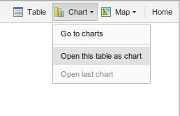
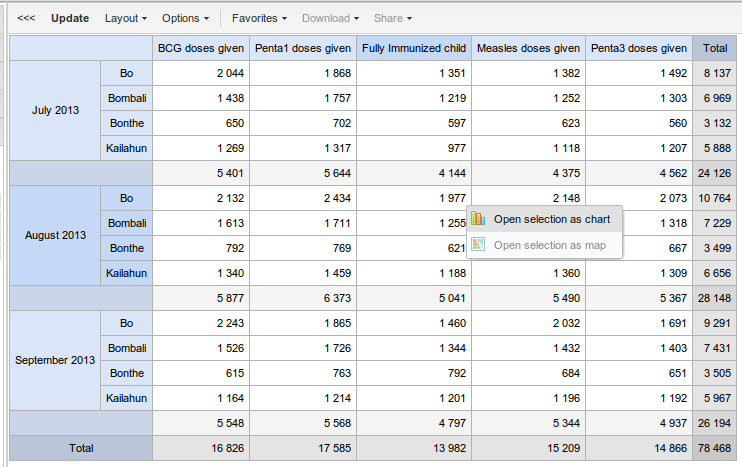

The analysis apps in DHIS 2 are completely integrated, so you can easily switch between pivot table, chart and map visualization of your data. When you have made a pivot table you can click e.g. "Chart" in the top right corner and then select "Open this table as chart".
|  |
If you just want to visualize a small part of your pivot table as a chart, you can click directly on a value in the table instead. A menu will appear. If you mouse hover the "Open selection as chart" option you can see that some of the dimension headers in the table are highlighted, indicating what data will be visualized as a chart.
|  |